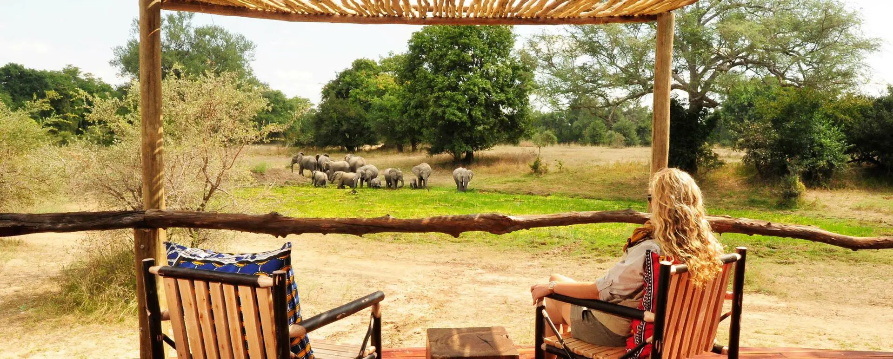
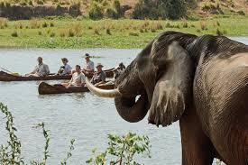

Explore Our Featured Destinations
Kafue National Park
One of Africa’s largest national parks, Kafue offers diverse wildlife, lush wetlands, and peaceful riverside lodges perfect for adventure seekers.
Liuwa Plain National Park
Known for its vast open plains and spectacular wildebeest migration, Liuwa is a pristine wilderness with stunning sunsets and minimal crowds.

Nsumbu National Park
Located on the shores of Lake Tanganyika, Nsumbu combines lake adventures with scenic savannah landscapes and rich wildlife experiences.
Bangweulu Wetlands
A unique ecosystem where water, wildlife, and people coexist — famous for shoebill storks and large herds of black lechwe antelope.